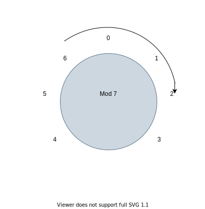

Modular arithmetic, relations, and partitions
Modular arithmetic is a common thread running through the topics of discrete structures. At this juncture, we investigate modular arithmetic in terms of set theory.
Firstly, we need to understand what we meant by division of two integers. Take as the Universal set, \(U,\) the set of all integers \(U= Z = \{ \ldots, -3, -2, -1, 0, 1, 2, 3, \ldots \}.\) For two elements \(x\) and \(y\) in \(Z,\) where \(y\) is not 0, we say that the integer \(y\) divides the integer \(x\) if there is an integer \(q\) where \(x = q*y + 0.\)
For example \(8\) is divisible by \(2\) because there exists an integer \(q = 4\) so that \(8 = 2*4 + 0.\) One way to prove that an integer \(x\) is divisible by integer \(y \neq 0\) is to show the existence of the integer \(q\) with \(x = qy + 0\) as we did with \(x = 8\) and \(y = 2.\)
However, to prove that \(x = 7\) is not divisible by \(2\) requires either an exhaustive search for integer \(q\) mentioned in the definiton of division or a sequence of true statements implying the truth of the statement that no such \(q\) exists.
To begin a draft of such a proof, let’s reframe the problem using more familiar terms. For \(x = 7\) and \(y = 2,\) we are looking for the integer solution set to the equation \(7 - 2q = 0.\) In set notation, we need \(S = \{ q \vert 7 - 2q = 0\}.\) The graph of this line consists of the points \(\{(q,y) \vert q \in Z \text{ and } 7- 2q = y \}.\) Visualizing the graph of the line \(7 - 2x = y\) in the \(x-y\) plane, the solution set \(S\) contains the \(x\) intercept of the line if the x-intercept is of the form \((q,0)\) where \(q\) is an integer. Otherwise, the solution set \(S\) will be the Emptyset, \(\emptyset.\)
The graph of the line \(7 - 2x = y\) is continuous through the \(x\)-axis crossing at a point between \((3, 0)\) and \((4,0)\) since \(7 - 2(3) > 0 > 7 - 2(4).\) The solution set \(S\) is empty and we conclude that \(7\) is not divisible by \(2.\)
The information gained by looking at the previous example goes beyond our original attempt to prove \(7\) is not divisible by \(2.\) The exercise provided insight into the steps needed in general.
We have demonstrated a common approach that is taken when solving a challenging problem is to determine the steps involved in a solution. First propose the steps for a solution, and then test out the solution on a trial case or cases. This can save time in the long run by potentially catching errors before they occur and correcting the approach.
Here is the proposed solution: For any integer \(x\) and positive integer \(y,\) determine the largest positive multiple of \(y\) less than or equal to \(x.\) If the difference between \(x\) and this largest multiple of \(y\) is \(0\) then \(x\) is divisible by \(y.\)
In general, for an integer \(x\) and non-zero integer \(y,\) we can determine the largest multiple of \(y\) less than or equal to \(x\) and the remainder using the following steps. Then the solution to the problem of determining if \(x\) is divisible by \(y\) is solved by finding the remainder (residual) \(x - qy.\) If the residual \(r\) equals \(0,\) then \(x\) is divisible by \(y.\) As we craft the steps needed, we are careful to consider the cases when \(x = 0, x < 0\) and \(x > 0.\)
given x,y
trackit = x
q = 0
if (trackit >= 0)
while (trackit - y >= 0)
trackit = trackit - y
q = q + 1
else
q = q - 1
while (trackit + y < 0)
trackit = trackit + y
q = q - 1
print qWalking through the above steps, the value of \(x\) and \(y\) remain fixed. The variable trackit is assigned to be \(x\) at the start. If \(x\) is greater than or equal to \(0,\) we subtract \(y\) from \(x\) and increment \(q\) until the first difference is negative. If \(x\) is less than \(0,\) we iteratively add on \(y\) and decrease \(q\) until the result is greater than \(0.\)
For \(x = 0\) and \(y = 2,\) the printed value of \(q\) is \(0.\) It is the case that residual, or remainder when \(x\) is divided by \(y\) is \(x - qy = 0 -0(2) = 0.\)
For \(x = 1\) and \(y = 2,\) the printed value of \(q\) is \(0.\) The residual, or remeainder when \(1\) is divided by \(2\) is \(1 -0(2) = 1.\)
For \(x = 2,\) \(q = 1\) and the residual is \(0.\)
For \(x = 3,\) \(q = 1\) and the residual is \(1.\)
We summarize output values and the residual for \(x\) and \(y = 2\):
| x | q | residual | ||||
| -1 | -1 | 1 | ||||
| 0 | 0 | 0 | ||||
| 1 | 0 | 1 | ||||
| 7 | 3 | 1 |
For \(x = -1, 1\) and \(7,\) the residual is \(1.\) It is then the case that residual, or remainder when \(x\) is divided by \(y\) is \(x - qy = 7 -3(2) = 1.\)
Modular arithmetic begins with forming a relation on the integers, denoted \(\equiv\) and defined as follows:
For integers \(x\) and \(z,\) \(x \equiv z \pmod{y}\) if the residual when dividing \(x\) by \(y\) is equal to the residual when dividing \(z\) by \(y.\)
From our discussion above, \(7 \equiv -1 \pmod{2}.\)
The “mod” relation is an equivalence relation and partions the set of integers into a disjoint subsets, and each of these subsets is viewed as a new object called an equivalence class.
To prove that \(x \equiv z \pmod{y}\) is an equivalence relation on \(Z,\) one would need to show that the relation is reflexive, transitive and symmetric.
For \(y = 2,\) the partitions defined by \(\equiv \pmod{2}\) are the disjoint subsets:
\[\ [1] = \{\ldots -3, -1, 1, 3, 5, \ldots\} \text{ and } [0] = \{\ldots -4, -2, 0, 2, 4, \ldots\}\]Observe that \([1]^{c}= [0]\), \([1] \cap [0] = \emptyset\) and \([0] \cup [1] = Z.\)
The set of classes \(\{ [0] , [1] \}\) is truly the set \(Z_2\) which can be mapped onto the set \(\{0,1\}.\) A map also exists from the Powerset of \(Z_2\) to the Powerset of \(\{0,1\}.\)
\[\{ \} \rightarrow \{ \}\] \[\{ [0] \} \rightarrow \{ 0\}\] \[\{ [1] \} \rightarrow \{ 1 \}\] \[\{ [0], [1]\} \rightarrow \{ 0, 1\}\]But what is even more beautiful is the mapping from \(Z\) to \(Z_n\) where \(n\) is a positive integer. The map that takes \(x\) in \(Z\) to the equivalence class element \([x]\) of \(Z\) where the set \([x]\) is created by the \(\equiv \pmod{n}\) relation.
When \(n = 2,\) the map takes \(7 \longrightarrow [7]\) However, there is some flexibility in referring to the elements of \(Z_2\) since \([1] = \{ \ldots, -1, 1, 3, 5, 7 \ldots \}\) and \([-1] = [-3] = \cdots = [7] = \cdots\), there are an infinte number of ways for us to refer to the same element in \(Z_2.\) The same is true for the elements equivalent to \([0] \in Z_2\) such as \([2]\) and \([-2]\).
The set \(Z_n\) can have no repeated elements by definiton, and the convention is to only use the elements \([0], [1], \ldots, [n-1]\) when working with the set and operations on the set.
In general Modular Arithmetic is defined on elements (equivalence classes) \([x]\) and \([y]\) in \(Z_n\) with
\[[x] + [y] = [z], where (x + y) \equiv z \pmod{n}.\]Example 1 In \(Z_7\), \([1] = \{\ldots, -6, 1, 8, \ldots\}\) and \([16] = \{ \ldots, -5, 2 , 9, 16, \ldots \}\) the result of adding \([1] + [3] = [4]\) in \(Z_2,\) which is reassuring to many. However, when adding \([3]\) and \([6]\) in $$Z_2, we have
\([3] + [6] = [2]\) since \((3 + 6) \equiv 9 \equiv 2 \pmod{2}.\)

To add 3 and 6 in \(Z_7,\) you can start at 6 and rotate clockwise 3 units to the 2 on the circle.
Set union and modular arithmetic are very different operations in \(Z_2\). Consider the union of \([0]\) and \([1]\) in \(Z_2.\)
\[[0] \cup [1] = Z\]and modular arithmetic on the elements (equivalence classes) of \(Z_2\) gives us:
\([0] + [1] = [x]\) where \(x \equiv (0 + 1) \pmod{2}\)
Student project: For your choice of a prime number \(p > 3\), let \(S = \{ 0, 1, 2, \ldots, p-1 \}.\) Illustrate the concepts of partitions, power sets and relations:
-
Find the power set of \(S\), \(\mathcal{P}(S)\) and the cardinality of \(\mathcal{P}(S).\)
-
Define a relation on a set \(S\) that satisfies the properties of an equivalence relation. What are the subsets of the partition of \(S\) generated by your relation?